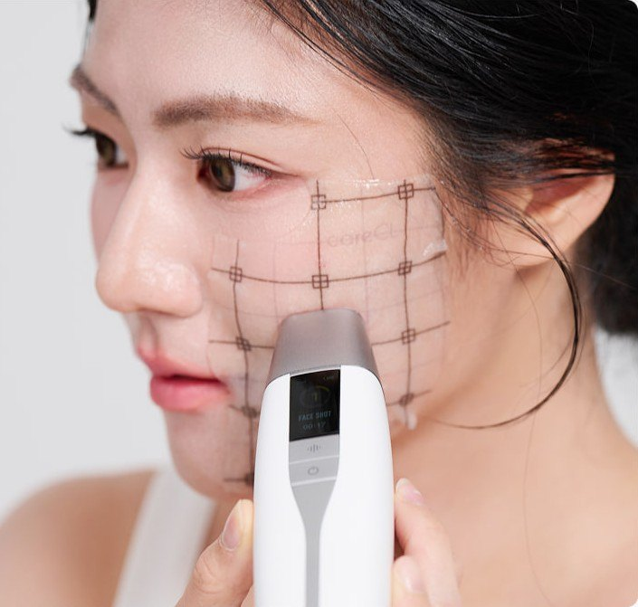
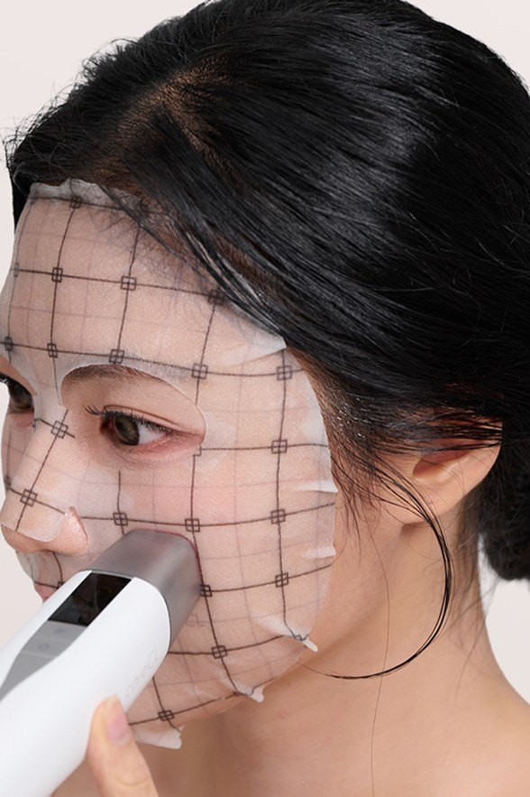

HOME / TECHNOLOGY / 케어클 기술
careCL Technology
케어클 기술
정해진 위치에, 정해진 시간.
5 SEC. STAMPING
AGING MAP 22를 통해 어디를 관리해야 하는지 알았다면, 그다음은 그 부위를 어떻게 관리할 것인가입니다.
고주파 홈뷰티 디바이스는 일반적으로 피부에 헤드를 밀착한 상태에서 계속 움직이며 사용합니다. 이 경우 사용자가 기기를 움직이는 속도와 경로에 따라 각 부위에 머무르는 시간이 달라질 수 있습니다.
careCL은 여기에서 위치와 시간에 주목했습니다.
TECH FIT의 SHOT 모드는 관리하고 싶은 부위에 헤드를 밀착한 뒤 약 5초 동안 한 위치에 머무르고, 한 번의 SHOT이 끝나면 다음 위치로 이동하는 스탬핑 방식으로 설계되었습니다.
한 자리, 약 5초.
그리고 다음 자리로.
사용자가 어느 부위를 관리했는지 확인하면서 얼굴 전체를 순서대로 관리할 수 있도록 한 것이 careCL의 5 SEC. STAMPING입니다.

왜 5초인가
고주파 관리에서 중요한 것은 단순히 에너지를 발생시키는 것이 아니라,
- 어디에 전달하는지,
- 얼마 동안 전달하는지,
- 얼굴 전체를 어떻게 빠짐없이 관리하는지
입니다.
TECH FIT은 피부에 밀착되었을 때 SHOT이 시작되고, 약 5초의 관리 시간이 끝나면 다음 위치로 이동할 수 있도록 설계했습니다.
이를 통해 사용자가 임의로 빠르게 움직이는 방식이 아니라, 정해진 위치에 일정한 시간을 두고 관리하는 루틴을 만들 수 있습니다.
지도에서 스탬핑으로
AGING MAP 22가 관리할 위치를 찾는 지도라면,
5 SEC. STAMPING은 그 위치를 관리하는 방법입니다.
careCL은 얼굴과 목, 바디를 관리 포인트로 세분화하고, 그 위치를 하나씩 관리할 수 있도록 스탬핑 방식을 연결했습니다.
여기에 GRID MASK TECH FIT을 함께 사용하면 격자를 따라 한 칸씩 이동하며 관리 위치를 보다 쉽게 확인할 수 있습니다.
UNDERSTAND → LOCATE → STAMP
나의 노화 방식을 이해하고,
관리할 위치를 찾고,
그 자리에 머물러 관리합니다.
이것이 careCL이 생각하는 체계적인 홈 에이징 케어입니다.
특허 기술
5 SEC. STAMPING은 careCL의 고주파 스탬핑 관련 특허 기술을 기반으로 합니다.
PATENTED RF STAMPING TECHNOLOGY
대한민국 등록특허 제10-2938674호 …….
시험으로 확인한 TECH FIT의 피부 변화
한국피부과학연구원 임상결과
* 수치는 시험성적서(콜라겐 발현 · 피부층 밀도 · 효능 평가) 확인 후 기입 예정입니다.

그리드 위에, 정확한 위치로
그리드 마스크가 관리 부위를 안내하고, 디바이스는 그 자리에 5초 동안 에너지를 전달합니다.